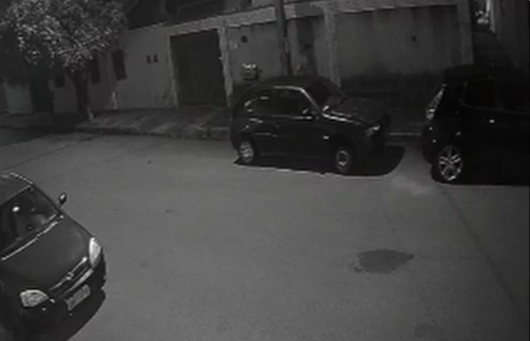

NOTAS PESSOAIS: C. RATTMAN
Última modificação: 25/02/2023
[03/10/2021]:
Iniciando hoje meus serviços para a Moon Company, é a empresa do Nashell e ele me convidou para liderar a pesquisa... acho que ele confia bastante em mim pelo noss último trabalho juntos. Acredito que dessa vez se trate de algo sobre minerais? não sei ao certo ainda.[07/10/2021]:
Com a construção do laboratório, fiz alguns exames na garota hoje, a sua condição é realmente algo muito estranho. Não parece uma bactéria ao certo, mas também não parece algum mal funcionamento em alguma função vital. Eu nunca vi nada parecido antes, parece que seja lá o que causa isso, está oculto em algum lugar no organismo. Irei começar ainda pesquisas para entender como o mineral influencia o organismo.[09/10/2021]:
Alguns pesquisadores que trabalham lá a mais tempo que eu parecem simplesmente aceitar que a menina está melhorando, nenhum deles sabe explicar o motivo da melhora. Eu não consigo me conformar em simplesmente assumir minha ignorância e desistir de sistematizar uma possível nova cura. Talvez eles estejam cansados de todo esse tempo de pesquisas sob pressão do Nashell, ouvi dizer que ele não é dos melhores chefes.[16/10/2021]
Passei algumas noites em claro desde a última atualização aqui... Nos últimos dias eu chequei algumas vezes a garota, tentei examinar a situação de infinitas formas, mas parece que nenhuma dá resultados particularmente bons. Eu também conversei com outros médicos que trabalhavam aqui antes de eu chegar, eles disseram que suspeitam de ser uma espécie de vírus que a medicina atual não consegue entender nem explicar, mas que de alguma forma o mineral quando dissolvido no corpo dela consegue inibir. Eu não tinha prestado atenção ainda, mas o fato de dissolverem constantemente minerais na corrente sanguínea dela com uma vazão significante e isso ainda fazer bem a ela é estranho, vou procurar saber mais sobre.[18/10/2021]
Conversei com Elias hoje, ele disse que pelas pesquisas de seu grupo, o mineral não tem propriedades extremas nem completamente foras do normal. Mas ele ressaltou a capacidade elétricas estranhas dele, ele falou que talvez precisemos de um novo modelo físico para fazer os cálculos necessários pra constatar sua natureza. Inicialmente, eu não entendi o que ele quis dizer com "capacidades elétricas", mas ele colocou uma pequena amostra do material ao lado de um pedaço de carne, e o minério começou a vibrar como se estivesse vivo, não entendemos o motivo disso ainda.[21/10/2021]
Com base na demonstração proposta por Elias, eu procurei outros profissionais da instituição que talvez pudessem me explicar melhor sobre isso. Em particular um doutor da ala A que dizem que trabalha aqui a mais tempo que a maioria. Ele me contou que já tentou muitas vezes interpretar o mineral, e que sua melhor suposição é que ele vibra conforme a matéria orgânica presente, emitindo uma zona magnética que imita a frequência dessa matéria. Infelizmente não pude entender ainda, talvez física não seja meu forte no final.[28/10/2021]
Hoje quando estava chegando nas instalações, não pude deixar de notar a vastidão vazia que ainda não havia documentado aqui: tudo ao redor da corporação parece sem vida, não no sentido de realmente morto, mas vazio. Acho que deve ter uma dúzia de casas no máximo nas proximidades, e uma grande área de nada, só terreno vazio. As pessoas das casas são bastante receptivas, e lembram do nome da maioria dos membros da empresa, é até meio estranho.[02/11/2021]
Quando estava saindo das dependências da empresa hoje, vi um grupo de pessoas com bicicletas recebendo reclamações de um dos homens do Maycon, parece que estavam apenas passando pelo lugar, mas tudo parece ter que ser extremamente controlado.[07/11/2021]
Durante os exames de rotina na garota hoje, eu notei uma coisa: a quantidade de mineral dissolvido no corpo dela é absolutamente anormal. Ela é uma pessoa com menos de 1.56m e 41kg, e mesmo assim tem o equivalente a uma mina inteira desse minério sendo dissolvido no seu sangue semanalmente, de alguma forma isso não faz com que ela pese mais nem se comporte de maneiras anormais, para onde vai tudo isso?[12/11/2021]
Estava com um grupo de colegas na biblioteca hoje, ela fica bem perto da ala médica. Estavamos procurando referências para o doutorado de um deles. Tivemos a ideia de procurar os livros pelo computador de lá, mas estranhamente, pela primeira vez até agora, eu vi um computador não funcionando apropriadamente, ele travava como se tivesse um motor por perto causando interferência.[19/11/2021]
Descobri só hoje que existe um tal de "Relatório Geral" da empresa, parece que várias pessoas escrevem ele invés de apenas uma, eu acho que já falaram de mim lá também[20/11/2021]
Ontem publicaram sobre o Elias ter comentado com eles sobre o mineral estar perto de acabar na Terra, eles planejam ir à lua para coletar mais lá... Não sei exatamente o que eu acho disso. Apesar de achar fascinante a situação e bonita a preocupação de Nashell, acredito que precisariamos de alguns anos de estudos intensivos sobre o mineral para compreender ele completamente, não é perigoso mexer com o desconhecido?[29/11/2021]
Com as notícias sobre a inevitável viagem à lua, eu não pude deixar de realizar mais buscas tentando entender o funcionamento das coisas. Eu e meus colegas passamos muitas horas sentados naquelas cadeiras com algumas amostras do sangue da garota. Um deles notou acabou se sujando devido a um pequeno incidente, ele não percebeu e foi buscar algo na biblioteca. Contudo, eu notei que quando ele estava indo para lá, o sangue pareceu se "mover" levemente, quase como aquele "Ferrofluido". Quando eu percebi isso, eu levei a minha amostra até a parte da biblioteca, e ele realmente pareceu se mover lá, talvez seja algum tipo de interferência eletrônica.[06/12/2021]
No exame de rotina hoje, aquela interferência ainda estava na minha cabeça, eu gostaria realmente de entender seu motivo. Mas, eu vi algo inesperado hoje: durante os procedimentos, eu estava sozinha na sala apenas com a garota, e sua atividade neural teve um pico repentino, eu não entendi o motivo mas quando olhei para a amostra de sangue que estavamos retirando para os exames, não parecia que o mineral estava dissolvido... havia tanto daquele minério ali que parecia mais que o sangue que havia dissolvido no mineral. Foi tudo muito rápido e eu não sei como replicar, mas por um momento eu pude ver, eu juro que eu vi, eu vi aquele pó se movendo como se estivesse reagindo à garota. Quando os outros médicos voltaram, eu não relatei nada, e ainda não fiz nenhum relatório oficial sobre isso, não sei se irei. Não deve ser a primeira vez que isso ocorre, não tem como ter sido, mas mesmo assim não há registros sobre.[10/12/2021]
As coisas que eu vi naquele dia ainda não saíram da minha mente, eu estou presa dentro desse laboratório deve haver uns três dias a esse ponto. Hoje, durante uma das minhas breves e raras saídas, eu me encontrei com o irmão do Nashell, ele parece um homem bom, estava conversando com Elias sobre a possibilidade da replicação do material, mas ao que eu ouvi, não parece possível. Quando estava voltando, ele me perguntou se eu não queria dar um tempo e descansar a mente, eu disse que estava bem.[18/12/2021]
Finalmente eu tenha talvez descoberto algo, depois de mais de uma semana nesse lugar. Durante alguns testes, eu percebi que meu celular parecia cada vez mais lento conforme eu me aproximava da biblioteca portando amostras do sangue da garota, acredito que ela esteja ████████████████████████████████, tive que sair de lá às pressas pois não tinha permissão de estar ali no momento, acho que alguém me viu.[29/12/2021]
Desde aquilo, tenho me sentido vigiada dentro de casa, parece que quando eu saí de lá eu trouxe algo junto comigo.
(Nunca vi esse carro)
[08/01/2022]
Talvez eu esteja ficando paranóica com as coisas, não acho que a corporação enviaria pessoas pra me vigiar só por eu ter pensado em algumas coisas, né? De qualquer forma, eu voltei hoje ao trabalho depois de alguns dias de férias. O irmão do Nashell tem sido mais presente na empresa recentemente, e acho que isso é devido à proximidade da data de começo das extrações lunares... Ainda não vejo isso com bons olhos.[13/01/2022]
Tudo tranquilo com a garota, e parando pra pensar, eu não sei nem o nome dela. Acho que toda essa ideia de "Condição única" desumanizou aquela criança para a maioria dos pesquisadores. a maioria das pessoas chamam ela só de garota ou menina e eu não quero ser a primeira a perguntar pro Nashell o nome dela... Talvez todos pensem assim e ninguém nunca sabe por isso.[24/01/2022]
O irmão do Nashell tem estado cada vez mais próximo de uma das famílias que mora perto da corporação, a que se mudou mais recenetemente em específico. Eles tem uma menina adorável, Alice é seu nome, ela tem cabelos loiros e quase sempre que a vejo ela está usando um vestido rosa. Acho que ela gosta de mim, está sempre por perto apesar de eu dizer que estou trabalhando, ela diz que não pode sair de lá por que a instalação da corporação é seu castelo e ela é uma princesa, uma menina autenticamente inocente é um alívio nesse lugar.[28/01/2022]
Hoje Alice pediu muito pra fazer uma maquiagem de rainha em mim, eu recusei por 3 horas seguidas dizendo que estava ocupada mas ela não desistiu, acho que ser persistente é um traço bom?[12/02/2022]
As operações na lua estão para começar, eu fiquei sabendo que Elias está trabalhando muito pra conseguir alguma pista de locais para começar as extrações, acho que ele encontrou algo recentemente.[16/02/2022]
Hoje tivemos uma pequena comemoração em todos os laboratórios, o início bem sucedido das extrações foi algo que todos aplaudiram de pé. Acho que o Elias deve estar muito contente com seu trabalho. A única pessoa que eu vi que não comemorou tanto foi o irmão do Nashell, ele parecia pensativo sobre algo. Quando o questionei o motivo de não estar comemorando com os outros, ele disse que gostaria de entender o que aquilo minério é exatamente, acho que eu sou a pessoa que mais entende ele nesse lugar.[28/02/2022]
A primeira remessa de materiais chegou hoje, são quantidades absurdas comparadas ao que tinhamos antes, ouvi dizer que apenas uma das crateras tem cerca de 50 vezes a quantidade total da terra. Precisamos de tempo para saber como a garota vai reagir a isso. Por falar em meninas, Alice tem ficado cada vez mais interessada nesse minério, eu gostaria de evitar que ela entrasse em contato com isso.[02/03/2022]
Ninguém me avisou, mas parece que pararam de escrever aqueles relatórios gerais. Ouvi rumores que alguns cientistas estavam furtando um pouco do mineral, então soube que a partir de um tempo pra cá eles vão manter todo o estoque sob controle da equipe do Maycon apenas, e a equipe dele pediu para pararem com as anotações lá. Não sei exatamente o que os relatórios tem de ruim.[19/03/2022]
Alice estava caminhando comigo perto do laboratório de Geologia, quando começou a passar mal do nada. Juro por Deus que ela estava cantarolando como sempre e subitamente caiu no chão convulsionando e balbuciando coisas que eu não entendi. Eu a levei para a enfermaria, ela melhorou surpreendentemente rápido, a única coisa que a incomoda agora é o galo que ficou na sua cabeça.[27/03/2022]
Passei a maior parte do dia sem muitos afazeres hoje, conversei com alguns colegas e com Elias, o qual virou basicamente um ídolo para todos pela descoberta da Cratera-7. Ele me falou hoje que estava preocupado sobre algo relacionado ao mineral, ele falou algo sobre gravitação mas eu não entendi muito bem, mandei que ele conversasse com aquele antigo doutor da ala A que eu falei antes... Ele disse que aquele morreu a um tempinho... eu tenho certeza que falei recentemente com ele.[11/04/2022]
Os dias passam e aquela menina não melhora absolutamente nada, esse mineral realmente parecer fazer bem a ela mas é como se fosse uma droga: quanto mais usa, mais pede. Eu falei com Nashell hoje sobre os exames diários dela, estão todos normais mas eu ainda gostaria de realizar algo mais profundo, ele falou que tudo bem[13/04/2022]
Vamos começar hoje os preparatórios para a maior intervenção cirúrgica na garota até então, estou um pouco ansiosa para isso, e pelo que conversei com meus colegas, todos nós estamos.[15/04/2022]
Fizemos ontem a "pesquisa", foram 7 horas... Descobrimos que apesar de não estar acordada, parece que ela ainda pode sentir e talvez até ouvir os seus arredores, e o pior disso tudo é que nós só descobrimos isso depois de mais de 5 horas de cirurgia... Ninguém havia administrado a anestesia naquela pobre garota... Rapidamente fizemos isso depois dessa descoberta, mas quando anestesiamos ela, as luzes da sala falharam e o Holter cardíaco desligou. Após a normalização dos equipamentos e da iluminação, demos continuidade.Os resultados não foram exatamente novidade para mim, mas agora estava oficialmente relatado sobre as anormalidades no sangue da garota e sobre as tais propriedades magnéticas dele. Além disso, descobrimos que de alguma forma, o mineral parecia não exatamente apenas dissolver no organismo, e sim mais se integrar a ele ativamente. Algumas observações indicaram que o mineral parecia "procurar" por algo dentro das células do corpo dela.
Não relatamos para Nashell sobre o incidente da anestesia.
[24/04/2022]
Alice veio hoje denovo, como todos os dias, mas ela não falou com ninguém hoje... tudo que ela fez foi ficar na frente da porta da Sala Limpa, parada completamente estática lá, como se estivesse hipnotizada. Eu fui chama-la pois já era tarde da noite e ela precisava sair, e quando toquei ela senti sua pele fria quase como se fosse metal, ela se virou para mim tal qual a garota gentil que eu conheço e me cumprimentou normalmente e foi embora. Mas havia uma coisa nova nela hoje: ela carregava um cachorrinho de pelúcia consigo[25/04/2022]
Alice foi novamente às intalações hoje, e veio diretamente falar comigo para me dar bom dia como de costume. Quando eu perguntei sobre seu cachorrinho novo, ela disse que preferia gatos, me deu a lingua e foi embora dar bom dia a todos, crianças mudam de preferências rápido?[29/04/2022]
Não sei se o que fazemos lá é certo, muitos cientistas manuseiam todo dia objetos cortantes e o sangue da garota para estudos. Hoje um dos meus colegas acabou se cortando com um bisturi enquanto testava propriedades do sangue dela, mas parece que a ferida dele entrou em contato com o minério do sangue dela de alguma forma... A mão dele inteira pareceu apodrecer em poucos minutos, nós tivemos que amputar seu membro em uma cirurgia de emergência. Fizemos o relatório sobre isso para Nashell, mas ele não criou nenhum novo regulamento sobre proteção, invés disso só nos disse para não jogarmos a mão fora, e sim usar ela para estudos no laboratório... Aquele cara se demitiu depois disso.[02/05/2022]
Alice novamente passou mal no prédio da companhia, eu conversei pessoalmente com seus pais hoje e eles disseram que já a levaram para um médico mas ele disse apenas que talvez ela esteja desenvolvendo uma espécie de "segunda personalidade" como uma bipolaridade tardia, é algo raro mas acontece. O problema é que isso não explica sua saúde em declínio ou a sua aparência parecer cada vez mais cansada. O irmão de Nashell disse que nós iremos nos responsabilizar pelo tratamento da garota, Nashell parece ser de acordo. Não sou contra, mas quem diria que nós cuidariamos de mais uma criança.[08/05/2022]
O quadro do médico que Alice visitou não é totalmente incompreensível depois de ver como ela age, em alguns momentos parece outra pessoa dentro do seu corpo, gostos completamente diferentes. O cacorrinho de pelúcia está sempre no colo dela, e quando eu pergunto sobre o nome dele, ela diz que é Dex... Espero que ela fique bem[10/05/2022]
Alguns exames foram feitos em Alice hoje, descobrimos que talvez a doença dela seja parecida com a daquela garota... Ambas tem sintomas parecidos, tomamos alguns ml de seu sangue para análise. Espero que não seja nossa culpa...[12/05/2022]
Realizamos os exames no sangue de Alice, e percebemos que os padrões são perigosamente semelhantes ao da garota. Mas dessa vez, pudemos ver a fonte do problema: é algo parecido com um parasita, mas que se esconde entre as células, lugares onde não conseguimos acessar facilmente. Ainda não entendemos como os sintomas são gerados[28/05/2022]
Ordens superiores disseram para pararmos de fazer exames em Alice, e que uma equipe secundária iria tomar conta dela... Que conversa é essa de equipe secundária? eu nunca fiquei sabendo que existia algo assim, se é que realmente existe. De qualquer forma, tiveram que respeita, mas eu não consegui ignorar e deixar ela indefesa com pessoas que eu nem sabia que existiam. Eu coletei as amostras que tinhamos e levei para casa. Estudei elas por umas duas semanas a esse ponto, mas eu precisava do minério para ter conclusões sobre a similaridade na condições das garotas... Eu vou dar um jeito de conseguir.[13/06/2022]
Eu consegui resquícios do mineral de um cientista que havia roubado ele da companhia antes do fim dos relatórios gerais. Realizei os testes entre o mineral e o sangue e... Elas tem a mesma condição, a diferença é que o mineral consegue realmente neutralizar o parasita no caso de Alice, mas só consegue amenizar no caso da outra garota... Mas como? como Alice desenvolveu isso? O que mais importa agora é que podemos curar ela, podemos resolver tudo, então nada disso importa agora[15/06/2022]
Conversei com Nashell hoje pela manhã, falei sobre todas as novidades que havia descoberto... ingenuidade minha, ele ignorou tudo e focou apenas no fato de eu ter conseguido o mineral por meios exteriores. Ele gritou que eu serei afastada em 8 dias, só o tempo necessário para encontrarem um substituo provisório para mim, e que eu devia usar esse tempo para guardar minhas coisas... Não posso aceitar isso e deixar Alice nas mãos de pessoas que não querem o melhor dela.[20/06/2022]
Estou cansada... já tentei de tudo, conversar com todos meus colegas, mas parece que todos estão convencidos de que eu estou delirando, eu não estou, eu sou completamente sã. Não sei o que Nashell falou para eles, mas é mentira... Acreditem em mim, por favor.[23/06/2022]
Na minha saída hoje, eu tentei conversar com o irmão de Nashell, falei para ele tudo que eu descobri sobre a condição de Alice, eu espero que ele faça algo sobre isso...[22/07/2022]
Parei de escrever aqui com frequência depois de ter sido afastada da corporação, mas quis escrever hoje já que percebi uma coisa nova. Eles não tiraram meu acesso ao site ainda, eu consegui o contato dos funcionários, mas nenhum deles respondeu, com excessão do irmão de Nashell. Não sei por que coloquei tanta esperança nesse cara....png)
Extra: Ouvi de Elias que alguns grupos de pessoas estão se formando estranhamente ao redor de locais perto da organização.
[16/08/2022]
Recebi um email hoje da empresa, eles disseram que a pessoa que me substituia sofreu um acidente de trabalho e não poderá mais exercer o cargo... Em resumo já que eles enrolaram bastante, eles basicamente querem que eu volte. Eu vou começar novamente amanhã[22/08/2022]
A Alice... Ela... Eu não consigo dizer em palavras, aquilo não parece nem mais sequer uma criança... Eu levei meu celular escondido e pude registrar alguns momentos da minha conversa com ela: A voz dela foi substituída por um módulo de voz artificial, ela não consegue mais falar por que isso exigiria um esforço que ela não é capaz de fazer. Ela está extremamente anêmica, eles deixam no corpo dela apenas o necessário para a manter viva, isso é desumano, monstruoso. Eu li os registros dos meses que estive fora, e parece que ela não é nem mais a mesma garota, aparentemente todas suas preferências mudaram, ela chegou a tentar atacar um gato quando mostraram um para ela, sendo que ela disse que preferia eles à cachorros, e por cima disso ainda mantém esse "Dex" de pelúcia sempre por perto. Porque? Porque isso aconteceu? Eu não consegui buscar motivos... eu tive que ir embora o mais rápido que pude... Eu preciso ajudar ela, eu VOU ajudar ela.[29/08/2022]
Não consigo me comunicar com esse pessoal direito, eles parecem todos cegos pelos objetivos de Nashell... Pelo que eu entendi, Alice contraiu algum tipo de infecção causada pelo mineral, mas que eles ainda não entendem completamente e por isso fazem exames nela. Acredito que o estado dela atual seja irreversível, mas de qualquer forma eu preciso pelo menos tentar... Nós gravamos um registro de nossa conversa com ela hoje, o irmão de Nashell estava lá.'
NÃO CONFIE NELES
' +Eu juro que vou te ajudar, Alice.
[02/09/2022]
...
Charllote Rattman